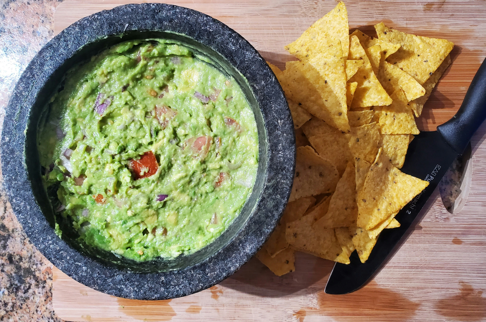

Home
Guacamole

Photo by Zoshua Colah on Unsplash
Description
Chips and guacamole is, in my opinion, a quintessential appetizer. It has everything you need from a textural perspective: crunchy chips, smooth avocado, and the crisp freshness of onion and tomato. The flavor is bright, fresh, and keeps you coming back for just one more chip. And lucky for all of us, it's easy to make for yourself at home instead of paying extra for it at Chipotle!
Ingredients
- 2 avocados, peeled and pitted
- 1 small onion, chopped
- 1 tomato, chopped
- 1 clove garlic, minced
- 1 lime, juiced
- salt and pepper to taste
- tortilla chips
Steps
- Using a fork, mash the avocado in a bowl.
- Stir in the onion, tomato and garlic.
- Add lime juice, salt, and pepper to taste.
- Cover and place in refrigerator for 30 minutes.
- Serve and enjoy with tortilla chips.